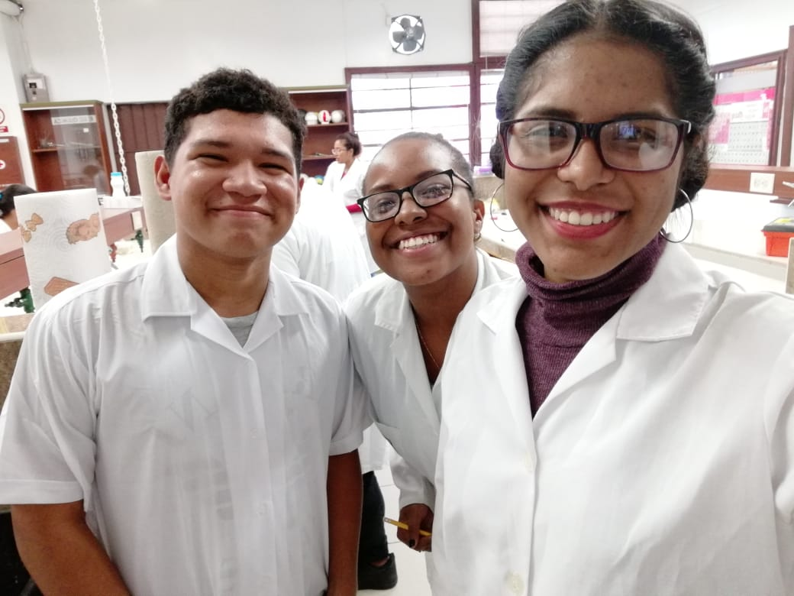

Yilveth Kristell Jacob Coronado
Dirección: Nuevo Tocumen, Calle 9, Casa 198
Artistas favoritos en general:
Hoy día finalizando el segundo semestre me he dado cuenta que a carrera es muy complicada y aparte ya no me interesa ese campo por lo tanto he decidido cambiar mi carrera para otra que descubrí que me apasiona, La Biología.
No precisamente biología pero sí la Microbiología por lo quie eso es lo que aspiro actualmente.
Esta es mi pequeña historia en la Universidad.